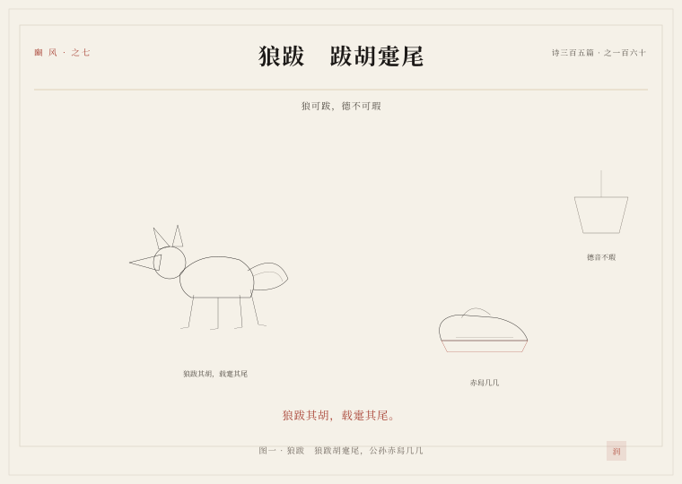
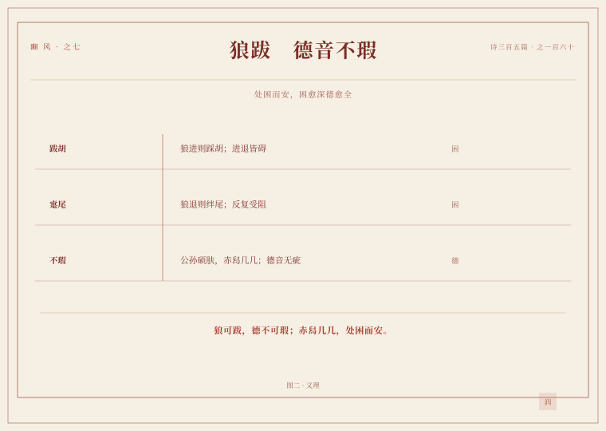

第一百六十篇 狼跋
豳风 · 之七 SJ160
朗读 · 普通话
依经文原文朗读，章次不读出；配古琴底乐，不改速、不加拖腔。全库同一音色（豆包 TTS），非播音员录制。
一 解题
诗三判：
- 谁在说：周大夫。美周公摄政之时，远有四方流言，近有成王不知；以狼跋胡、疐尾起兴，写其进退皆难，而神色不改。
- 说什么事：二章只写一狼：跋胡则碍，疐尾则滞；再写一公孙：硕肤、赤舄几几、德音不瑕。狼愈狼狈，人愈从容。
- 为何编在此：豳风末篇，也是《国风》末篇。以「德音不瑕」收十五国风，正为一卷之结。
《毛序》：「《狼跋》，美周公也。周公摄政，远则四国流言，近则王不知，周大夫美其不失其圣也。」
朱子《诗集传》：「兴也。跋，躐也。胡，颔下肉也。疐，跲也。公孙，豳公之孙也。硕肤，大美也。赤舄，冕服之舄也。几几，安重貌。瑕，疵也。」
本库的看法：《狼跋》是一首把「处困」写成「狼行」的诗。
毛序说「不失其圣」，朱子说「兴」，二说一德一喻，其实同指：进退皆碍者，狼之形；处困而安者，公之德。
须辨：跋是躐、踩，不是跋涉；胡是颔下肉，不是胡须；疐是跲、绊，不是疐尾之病；公孙是豳公之孙，指周公；硕肤是大美，不是肥胖；赤舄是冕服之舄，不是红鞋；几几是安重，不是几案；瑕是疵，不是闲暇。诗不写流言，只写「不瑕」。
断语：狼可跋，德不可瑕；赤舄几几，处困而安。
先辨五事：「跋」是踩；「胡」是颔下肉；「疐」是绊；「硕肤」是大美；「几几」是安重。
二 经文
第一章
狼跋其胡，载疐其尾。
公孙硕肤，赤舄几几。
第二章
狼疐其尾，载跋其胡。
公孙硕肤，德音不瑕。
三 韵读
- 一章：胡、尾、肤、几，鱼、微相叶。声顿而安。
- 二章：尾、胡、肤、瑕，微、鱼相叶。声转而定。
读法：二章颠倒「跋胡」「疐尾」，声亦颠倒；狼愈乱，人愈整。
四 字义与名物
- 狼：狼。跋：躐、踩。胡：颔下肉。载：则。疐：跲、绊。尾：尾。
- 公孙：豳公之孙，指周公。硕肤：大美。赤舄：冕服之舄。几几：安重貌。德音：德音。瑕：疵。
五 今译
一章：狼踩到自己的颔下肉，又绊住自己的尾巴。公孙大美，赤舄安重。
二章：狼绊住自己的尾巴，又踩到自己的颔下肉。公孙大美，德音无瑕。
六 章旨
- 一章：跋胡疐尾，是「进退皆碍」；硕肤赤舄，是「处困而安」；形狼狈，神安重。
- 二章：疐尾跋胡，是「反复受阻」；德音不瑕，是「终无疵」；困愈深，德愈全。
七 诗教
- 处困不改：狼进退皆碍，公孙不改其度；困是外境，德是内守。
- 安重是德：赤舄几几，不是装饰，是仪；仪不乱，则心不乱。
- 不瑕是结：十五国风以「德音不瑕」收；风诗之终，归于无瑕。
八 分寸与边界
- 不把「跋」读成跋涉：跋是踩；读成跋涉，则「其胡」无着。
- 不把「胡」读成胡须：胡是颔下肉；读成胡须，则狼形失。
- 不把「硕肤」读成肥胖：硕肤是大美；读成肥胖，则美刺皆失。
- 不把「几几」读成几案：几几是安重；读成几案，则仪容失。
- 不把「公孙」读成泛称：公孙是豳公之孙，指周公；泛称则诗旨失。
九 存疑
- 诗旨：毛序「美周公，不失其圣」，朱子「兴」。本库从毛朱，以处困不瑕为骨。
- 「公孙」：毛传「豳公之孙」，指周公。从毛传。
- 「硕肤」：毛传「大美」。从毛传。
- 「赤舄」：朱子「冕服之舄」。从朱子。
十 跨典
- 《周易·困》「君子以致命遂志」；此篇处困而德音不瑕，正是困而不失。
- 《论语》「岁寒，然后知松柏之后凋」；此篇狼跋而公孙安重，同一岁寒之守。
- 《诗经》十五国风终于此篇；以「不瑕」收，正见诗教之归。
十一 双卡与图
六对：
| 跋（踩） |
跋（跋涉） |
| 胡（颔下肉） |
胡（胡须） |
| 疐（绊） |
疐（疐尾之病） |
| 硕肤（大美） |
硕肤（肥胖） |
| 几几（安重） |
几几（几案） |
| 瑕（疵） |
瑕（闲暇） |

图一 · 狼跋 跋胡疐尾，进退皆碍

图二 · 狼跋 赤舄几几，德音不瑕